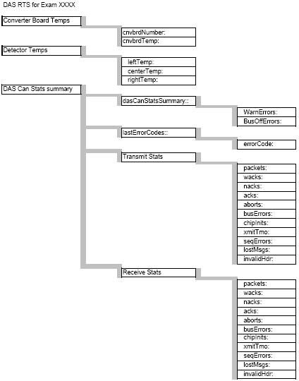

Operating Documentation
Direction 5181178-800, Rev# 16
BrightSpeed Select Service Methods Gen
Module Version 1.0, Version Date 2/16/07
Operating Documentation |
This document defines the available Real Time Statistics (RTS) data available on the system for the DAS subsystem. The RTS data is sent by the DCB to the host at the end of each exam.
The RTS viewer for the DAS Stats shows a listing of information related to the DAS and Detector. See Illustration 1 for a pictorial view of the data to help in understanding the information seen. The information is grouped into 3 areas for the listed exam.
Converter Board Temperatures
Detector Temperatures
DAS CAN Stats summary
Illustration 1: Pictorial view of the DAS Stats

Some of the information is repeated multiple times such as the detector temperatures for the 3 zones are listed 100 times. This is 100 samples throughout the exam.
See the Temperatures for Gantry and Detectordocument for the summary statistics of the same detector temperatures.
The DAS CAN Statistics data is repeated 3 times.
Below is a sample of the data seen with explanations and ranges defining normal operation.
Table 1: RTS Data
| RTS (Real Time Statistics) Name | Data Example | Unit | Range | Explanation |
| Date: Wed Apr 7 08:12:51 2004 | Time/Date stamp for this data | |||
| ENDEXAM: ID 801 | exam this data is associated with | |||
| cnvbrdTemps:: | Converter board temps as measured by onboard temp sensor for each card. | |||
| cnvbrdNumber: | 1 | converter card number for this | ||
| cnvbrdTemp: | 32.4000 | Degree C | 15.0 - 65.0 | Temperature on converter board: DAS is specified to operate between 15 to 65 Degrees. If DAS temp goes above 65 Deg, converter boards will assert a fault which will prevent system from scanning until temp gets under 62 Deg C. If temp ever gets this high, system fans need to be serviced. Typical board temp is between 30-40 degrees. |
| Data continues for all boards 1-96 | ||||
| cnvbrdNumber: | 96 | |||
| cnvbrdTemp: | 320 | Degree C | 15.0 - 65.0 | Same as above |
| detTemps:: | status of each of the 3 detector heater strips. 3500 is 35 deg C | |||
| leftTemp: | 35.92 | Degree C | 35.70 - 36.30 | detector left zone heater (specification 36 ± 0.3 Deg C) |
| centerTemp: | 35.94 | Degree C | 35.70 - 36.30 | detector center zone heater (specification 36 ± 0.3 Deg C) |
| rightTemp: | 36.14 | Degree C | 35.70 - 36.30 | detector right zone heater (specification 36 ± 0.3 Deg C) |
| Detector temps Repeated 100 times | ||||
| dasCanStatsSummary:: | CAN communications statistics | |||
| WarnErrors: | 0 | number | NA | General CAN bus warning level errors. |
| BusOffErrors: | 0 | number | NA | |
| lastErrorCodes:: | This section contains the last 7 errors from the CAN chip during the exam. Error number given is CAN chip specific and not useful in the field. Only use as indication that an error occurred. | |||
| errorCode: | 0 | number | NA | |
| Repeats a total of 7 times to give the last 7 errors from the CAN chip. | ||||
| XmitStats:: | Transmit stats Header. There are 4 sets of Transmit stats. Each group is for a different CAN node and they are in order: RCIB, DCB, CCB, PC (not used). | |||
| packets: | 0 | number | NA | Data Packets sent |
| wacks: | 0 | number | NA | |
| nacks: | 0 | number | NA | number of times an acknowledgement is not received. |
| acks: | 0 | number | NA | Acknowledgement of packets sent, should equal packets |
| aborts: | 0 | number | NA | Number of aborted attempts. |
| busErrors: | 0 | number | NA | Number of CAN bus errors. |
| chipInits: | 0 | number | NA | CAN bus chip initializations |
| xmitTmo: | 0 | number | NA | Transmit Time outs |
| seqErrors: | 0 | number | NA | Sequence errors, data packets out of order. |
| lostMsgs: | 0 | number | NA | lost packets |
| invalidHdr: | 0 | number | NA | invalid header transmitted |
| Xmit Stats repeated 3 more times. | ||||
| RcvStats:: | ||||
| packets: | 6296 | number | NA | Data packets received. |
| wacks: | 0 | number | NA | |
| nacks: | 0 | number | NA | number of times an acknowledgement is not received. |
| acks: | 6296 | number | NA | Acknowledgement of packets received, should equal packets |
| aborts: | 0 | number | NA | Number of aborted attempts. |
| busErrors: | 0 | number | NA | Number of CAN bus errors. |
| chipInits: | 0 | number | NA | CAN bus chip initializations |
| xmitTmo: | 0 | number | NA | Transmit Time outs |
| seqErrors: | 0 | number | NA | Sequence errors, data packets out of order. |
| lostMsgs: | 0 | number | NA | lost packets |
| invalidHdr: | 0 | number | NA | invalid header transmitted |
| RcvStats repeated 3 more times. |